Recordaremos que para abrir el archivo de datos en gnumeric debemos elegir la opción “Importar texto (configurable)”, y que es importante que en el segundo diálogo de importación seleccionemos “Espacio” como separador y comprobemos que NO tenemos seleccionado “coma”:
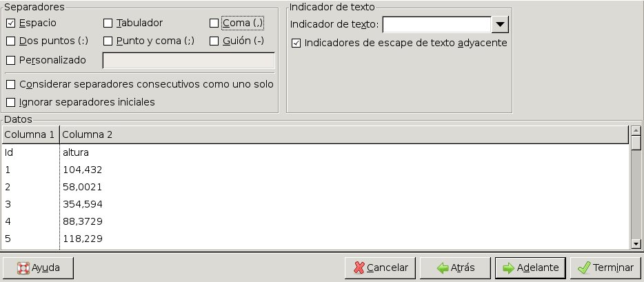
Una vez que tenemos los datos en la hoja de cálculo realizaremos el histograma de frecuencias fenotípicas para observar la distribución. Elegiremos las opciones:
Estadística⇒Estadística descriptiva⇒Tablas de frecuencia⇒Histograma
Como rango de entrada en la primera pestaña pondremos b2:b501, ya uqe tenemos 500 individuos:
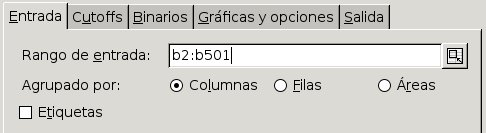
En la pestaña “Cutoffs”, puesto que los valore fenotípicos son mayores de 0 y menores de 500, elegiremos este rango total y lo dividiremos en 50 clases:
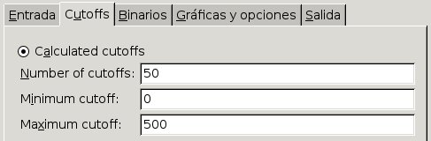
En la pestaña “Gráficas y opciones” elegimos “Gráfico de histograma”:
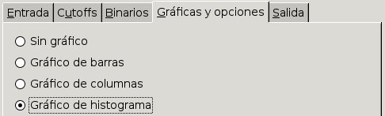
Y en la pestaña “Salida” elegimos “Rango de salida” y ponemos “d2” para que la esquina superior izquierda de la salida parta desde esa celda.
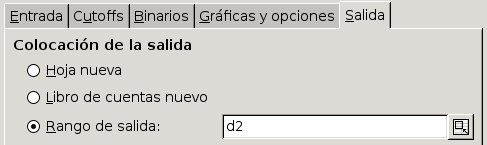
Cuando pulsemos en el botón “Aceptar” podremos ver el histograma de frecuencias. Necesitaremos desplazarlo hacia la derecha para hacer visible la lista numérica de clases, y también puede ser conveniente estirarlo ligeramente en horizontal para distinguir con más facilidad las clases fenotípicas:
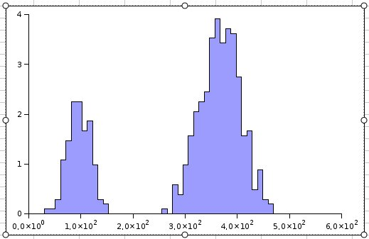
Vemos que los datos preentan una distribución bimodal, con dos grupos claramente diferenciables, que presentan una distribución gaussiana. Consideradas por separado, cada una de las distribuciones tiene la apariencia típica de un carácter cuantitativo, en el que la superposición de la variación genética y las variaciones ambientales provocan una distribución contínua que hace imposible distinguir diferentes clases de individuos.
La distribución bimodal está causada por el gen que provoca enanismo. Las plantas homocigóticas e2e2 son enenas y presentan valores fenotípicos en torno a 100. Estas plantas serán las que forman la distribución de la izquierda. En la derecha deben encontrarse tanto las plantas E1E1 como las E1e2 y, entre estas, las habrá con las diferntes combinaciones genotípicsas posibles de los genes A, B y C.
Si consideramos únicamente las plantas enanas:normales, esperamos que estén en una proporción 1:3. Vamos a considerar por tanto únicamente las dos clases que se pueden distinguir y a sumar los indiviudos que pertenecen a cada una de ellas y a comprobar mediante un análisis de χ2 si se puede o no rechazar que los datos se encuentren en estas proporciones. En la siguiente figura vemos el rango de valores que corresponden con la clase enanas seleccionadas con el rectángulo verde para incluirlas en la fórmula con la suma:
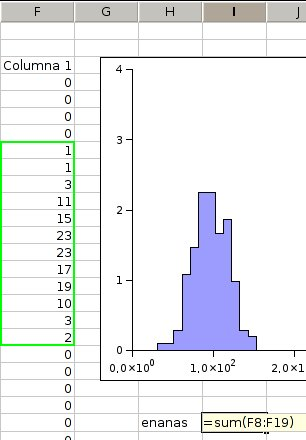
De la misma manera seleccionamos y calculamos la suma del rango de plantas normales:
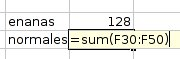
Calulamos entonces las frecuencias observadas multiplicando los valores absolutos de cada clase por 4 y dividiéndolos por el total de individuos. Podemos introducir la fórmula en una de las casillas y copiarla en la otra si en lugar de poner los valores indicamos la celdilla de donde deban leerse:
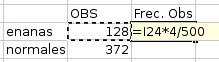
Podemos crear otra columna con las proporciones esperadas 1:3, y otra más donde calcularemos la frecuencia absoluta esperada de cada clase de la siguiente forma:
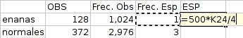
Calcularemos ahora los componentes de la chi2 aplicándo la fórmula:
Pulsando para cada dato en la celdillas de donde debe leerse, o escribiendo la posición de la celdillas directamente en la fórmula:
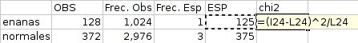
Después calcularemos la suma de los componentes de la χ2:
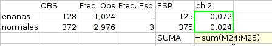
Compararemos el valor obtenido, en este caso 0.096:
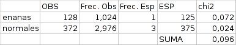
con la distribución de χ2 considerando un grado de libertad, ya que tenemos únicamente dos clases:
| g.l. | 0.95 | 0.90 | 0.80 | 0.70 | 0.50 | 0.30 | 0.20 | 0.10 | 0.05 | 0.01 | 0.001 |
| 1 | 0.004 | 0.02 | 0.06 | 0.15 | 0.46 | 1.07 | 1.64 | 2.71 | 3.84 | 6.64 | 10.83 |
| 2 | 0.10 | 0.21 | 0.45 | 0.71 | 1.39 | 2.41 | 3.22 | 4.60 | 5.99 | 9.21 | 13.82 |
El valor de χ2 obtenido se encuentra entre 0.06 < 0.096 < 0.15 que se corresponden con unas probabilidades de 0.80 > P > 0.70. Por tanto la probabilidad de equivocarnos si rechamos la hipótesis planteada de que los datos siguen unas proporciones 1:3 es muy superior al máximo poermitido de 0.05, por lo que no podemos rechazar esa suposición.
Como vemos, un carácter cuantitativo como la altura puede, en ciertas ocasiones ser analizado como cuantitativo cuando se puedne distinguir clases fenotípicas concretas. Si nuestro diseño del carácter es correcto la clase de plantas enenas debe corresponder a plantas hocigóticas e2e2, aunque tengan distintas combinacioes de alelos en los demás genes, si las cruzamos entre sí deberemos obtener una población que constaría únicamente de plantas enenas.
Para comprobarlo, realizaremos un cruce eligiendo como parentales varias de las plantas que tengas valores fenotípicos en torno a 100. En GenWeb, nos aseguraremos que tenemos visibles las generaciones, si no es así pulsaremos el botón “Ver generaciones”, y que tenamos abierta la generación 1 que hemos creado inicialmente, si no es así pulsaremos sobre el botón “Abrir” correspondiente a ésta generación. Asimismo pulsaremos el botón “Ver parentales” dentro del recuadro “crear un cruce” para poder ver la tabla de parentales que vayamos seleccionado. La página deberá tener entonces un aspecto como el siguiente:
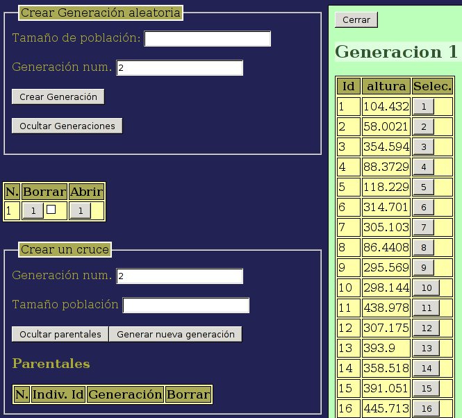
A continuación iremos eligiendo individuos con valores fenotípicos alrededor de 100 de la lista de individuos de la generación 1, pulsando el botón correspondiente de la columna “Selec.” para irlos seleccionando. Deberán de ir apareciendo en la tabla de parentales:
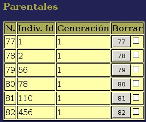
Una vez seleccionados unos cuantos individuos ponemos el tamaño de la población que queremos generar (500 en el ejemplo) y pulsamos el botón “Crear nueva generación”. La nueva generación deberá entonces aparecer en la tabla de generaciones:
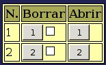
Podremos entonces abrir la generación 2, y observar los valores fenotípicos que tienen los individuos. Vemos que todos tienen valores inferiores a 200, por lo que elegiremos éste como valor máximo a la hora de representar el histograma de frecuencias. Bajaremos hasta la parte inferior de la lista de individuos, y descargaremos el archivo con los datos generados.
Ya conocemos los pasos que hay que seguir para importar estos datos como texto configurable en gnumeric, y generar un histograma de frecuencias en el que elegiremos, en la pestaña “Cutoffs”, un total de 20 clases con un rango ente 0 y 200.
El gŕafico que obtenemos nos muestra que efectivamente tenemos una única distribución contínua de tipo gaussiano, con una media en torno a 100, como corresponde a una población formada únicmaente por plantas enanas.
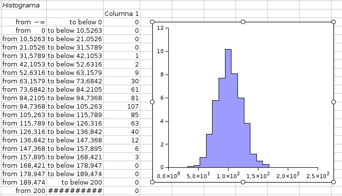